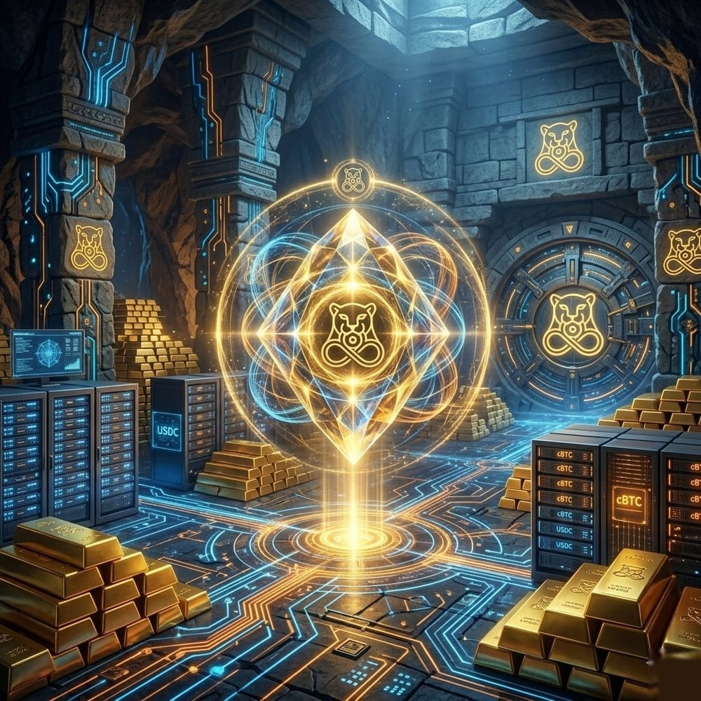
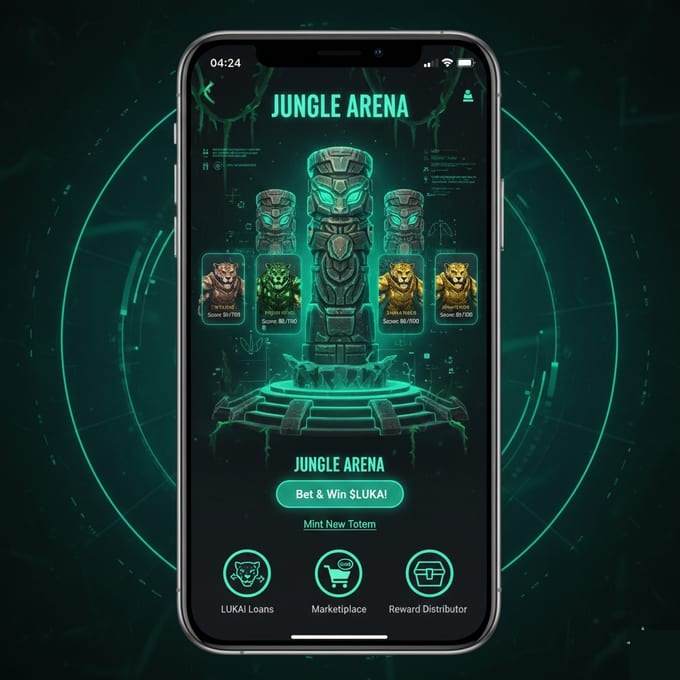
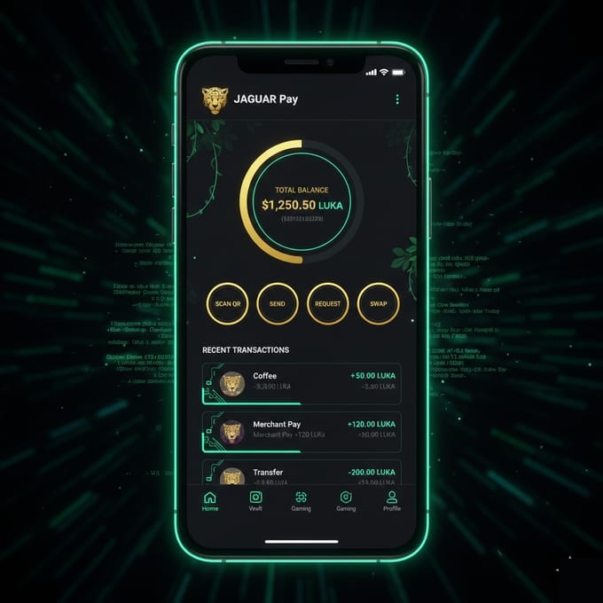
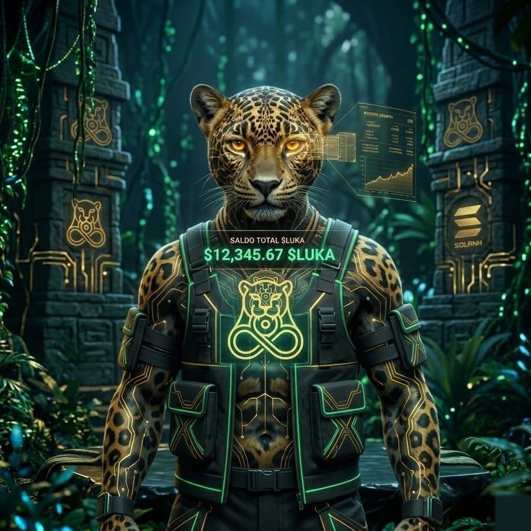

La selva está llena de monedas que suben por hype y caen igual de rápido. LUKASH es al revés: cada $LUKA está respaldado por la Reserva Sagrada —KASH— Bitcoin, Solana y USDC de verdad, que puedes ver en la blockchain cuando quieras. No tienes que creernos: lo ves tú mismo.
7 de cada 10 personas en LATAM ya usan banca digital — puedes pagar y transferir desde el celular. Pero lo que guardas pierde valor mientras duermes: en cinco años, las monedas de la región perdieron más del 30% de su poder de compra. Menos del 30% de la gente ahorra de verdad, y aún menos tiene acceso a instrumentos para crecer. La cripto abre camino — LATAM ya es una de las regiones con mayor adopción del mundo —, pero entre tanto ruido, cuesta encontrar proyectos que construyan algo real.
La blockchain, que te da el control, y la fuerza de tu gente. Juntas, al servicio de una sola cosa: tu crecimiento. Así se ve:
Tus Lukas no los manda un banco ni nadie. Viven en la blockchain, en tus manos. Confías porque lo ves —no porque alguien te lo prometa.
Se acabó cazar solo. En Manada llegas lejos: ahorra, invierte y crece con tu gente. Juntos es más fácil —y más fuerte.
Ya sabes lo que es farmear aura. Pero esta no es pasajera: es un aura real, que te da poder para crecer. La ganas cazando misiones —es tuya, sube de nivel, y no se compra.

En la calle, el aura va y viene. Aquí tu Aura es real: on-chain, tuya y no se puede comprar. La ganas cazando misiones en la Jungle Arena —subes de nivel, desbloqueas cosas y te ganas tu lugar en la Manada. Aquí ahorrar y crecer se siente como ganar, no como sacrificar. De Cachorro a Titán.
Esta es la clave. No ganas por especular ni por esperar sentado: ganas usándola. Cada movida fortalece la Reserva Sagrada —KASH— y mientras más se usa, más vale lo que tienes.
Usas la app: pagas, ahorras, juegas. Cada movida cobra una comisión mínima.
Parte de esa comisión va a la Reserva Sagrada; otra parte quema $LUKA para siempre. Menos monedas, más respaldo.
Participar te sube de nivel y te devuelve valor. No te premian por especular: por construir.
Debajo de la app hay algo que nunca para: el protocolo. Sus Motores toman una fracción de cada transacción y la convierten —solos y en la blockchain— en activos reales para la Reserva Sagrada. Nadie los controla y nadie los puede apagar: lo garantiza el código, no una empresa. Mientras más usas LUKASH, más grande y más fuerte se vuelve la Reserva —y más vale cada $LUKA que tienes.
Todo automático, en cada transacción. Cuanto más se usa, más crece —esa es la clave del protocolo.
Nada de esto es secreto: puedes verificarlo en la blockchain. Así se compone la Reserva y así se reparte el token.
Activos duros de verdad, no papel. Esto es lo que la respalda:
Supply: 10.000M → 3.300M (deflacionario). Equipo con vesting on-chain. Todo verificable.

Envía, cobra, escanea QR, cambia. Y lo mejor: cada transacción hace crecer la Reserva Sagrada —usar tus Lukas no es perderlos; es fortalecer lo que tienes. Todo en una app con LUKAI, que te explica sin enredos. No tienes que ser experto en cripto para empezar.

Nadie nace Titán. Todos empezamos como Cachorro. Lo que te hace crecer es lo que cazas —y eso no se compra.
Cazas, aprendes, resistes —hasta volverte Titán: dueño de tu ascenso. Y cuando el monte se pone oscuro, la Manada ruge contigo. Así se construye algo que dura.
Cada $LUKA que usas fortalece la Reserva Sagrada y te acerca a tu próximo nivel.